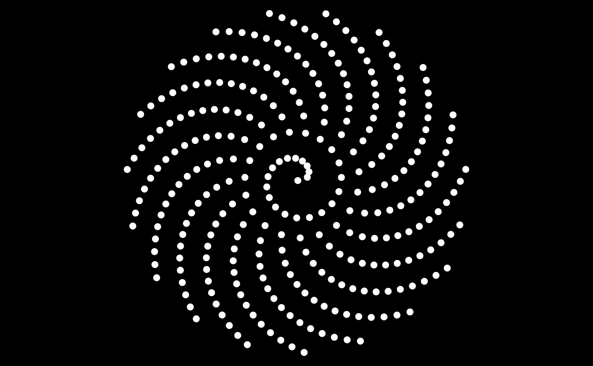
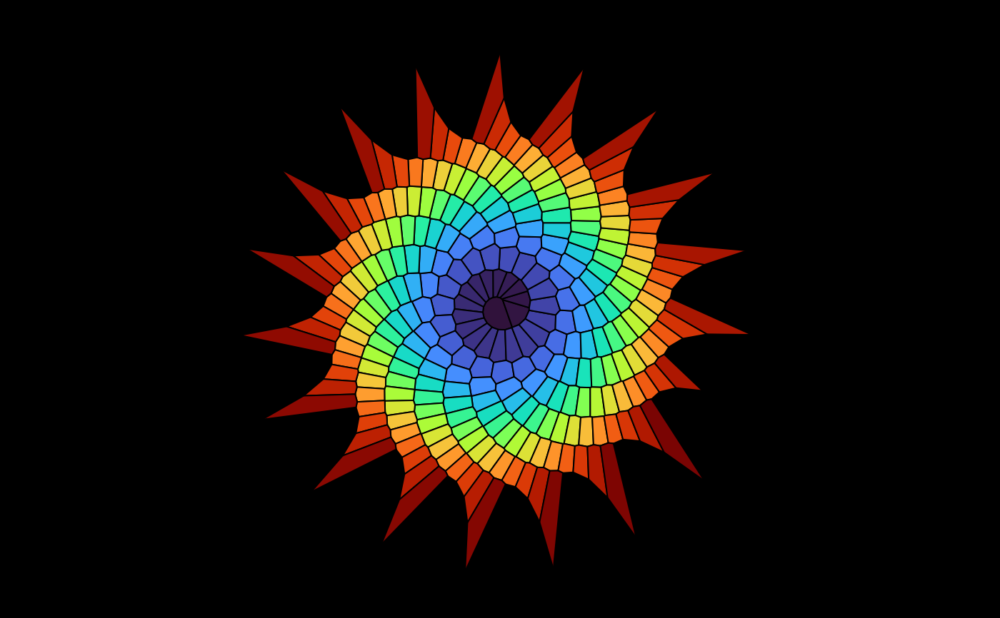

Plot all the bounded cells of a 2D or 3D Voronoï tessellation.
Usage
plotVoronoiDiagram(
v,
colors = "random",
hue = "random",
luminosity = "light",
alpha = 1,
...
)Arguments
- v
an output of
voronoi- colors
this can be
"random"to use random colors for the cells (withrandomColor),"distinct"to use distinct colors with the help ofdistinctColorPalette, or this can beNAfor no colors, or a vector of colors; the length of this vector of colors must match the number of bounded cells, which is displayed when you run thevoronoifunction and that you can also get by typingattr(v, "nbounded")- hue, luminosity
if
colors = "random", these arguments are passed torandomColor- alpha
opacity, a number between 0 and 1 (used when
colorsis notNA)- ...
arguments passed to
plotBoundedCell2DorplotBoundedCell3D
Note
Sometimes, it is necessary to set the option degenerate=TRUE
in the delaunay function in order to get a correct
Voronoï diagram with the plotVoronoiDiagram function (I don't know
why).
Examples
library(tessellation)
# 2D example: Fermat spiral
theta <- seq(0, 100, length.out = 300L)
x <- sqrt(theta) * cos(theta)
y <- sqrt(theta) * sin(theta)
pts <- cbind(x,y)
opar <- par(mar = c(0, 0, 0, 0), bg = "black")
# Here is a Fermat spiral:
plot(pts, asp = 1, xlab = NA, ylab = NA, axes = FALSE, pch = 19, col = "white")

# And here is its Voronoï diagram:
plot(NULL, asp = 1, xlim = c(-15, 15), ylim = c(-15, 15),
xlab = NA, ylab = NA, axes = FALSE)
del <- delaunay(pts)
v <- voronoi(del)
#> Voronoï diagram with 281 bounded cells.
length(Filter(isBoundedCell, v)) # 281 bounded cells
#> [1] 281
plotVoronoiDiagram(v, colors = viridisLite::turbo(281L))

par(opar)
# 3D example: tetrahedron surrounded by three circles
tetrahedron <-
rbind(
c(2*sqrt(2)/3, 0, -1/3),
c(-sqrt(2)/3, sqrt(2/3), -1/3),
c(-sqrt(2)/3, -sqrt(2/3), -1/3),
c(0, 0, 1)
)
angles <- seq(0, 2*pi, length.out = 91)[-1]
R <- 2.5
circle1 <- t(vapply(angles, function(a) R*c(cos(a), sin(a), 0), numeric(3L)))
circle2 <- t(vapply(angles, function(a) R*c(cos(a), 0, sin(a)), numeric(3L)))
circle3 <- t(vapply(angles, function(a) R*c(0, cos(a), sin(a)), numeric(3L)))
circles <- rbind(circle1, circle2, circle3)
pts <- rbind(tetrahedron, circles)
d <- delaunay(pts, degenerate = TRUE)
v <- voronoi(d)
#> Voronoï diagram with four bounded cells.
library(rgl)
open3d(windowRect = c(50, 50, 562, 562))
material3d(lwd = 2)
plotVoronoiDiagram(v, luminosity = "bright")